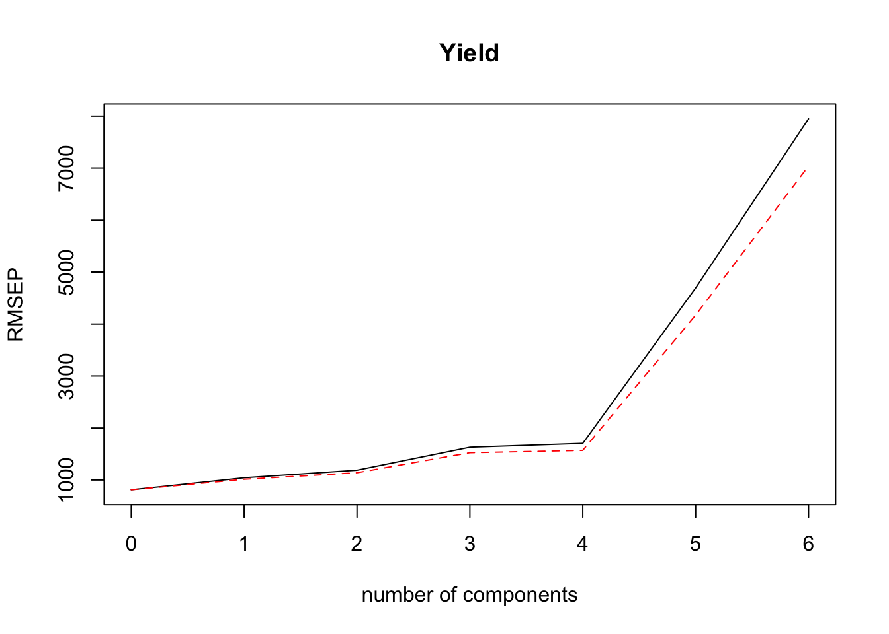
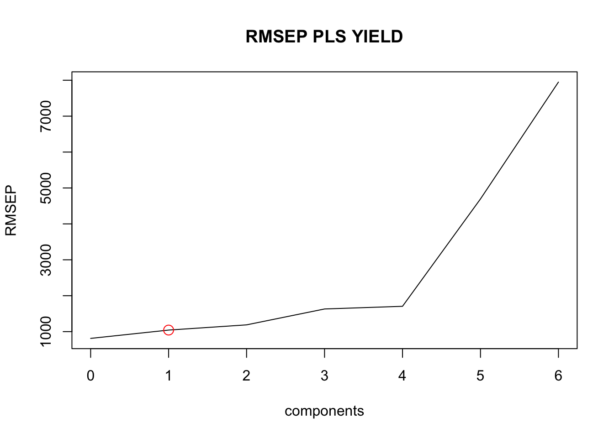
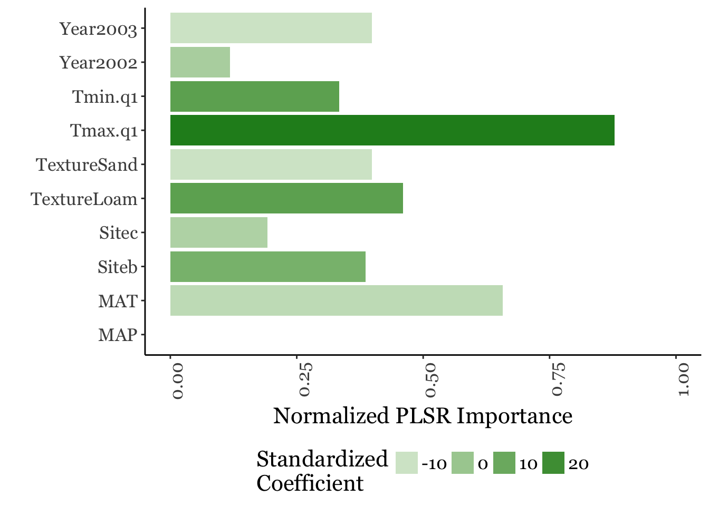

PLSR
Toby Maxwell
11/7/2018
library(pls)##
## Attaching package: 'pls'## The following object is masked from 'package:stats':
##
## loadingslibrary(ggplot2)
#sample data frame
test<-data.frame(
Yield<-rnorm(9, 6000, 1000),
Texture<-rep(c("Loam", "Clay", "Sand"),3),
Year<-as.factor(c(rep(2001:2003, 3))),
Site<-c(rep("a",3), rep("b",3), rep("c",3)),
MAT<-rnorm(9,8,3),
MAP<-rnorm(9,100,15),
Tmin.q1<-rnorm(9,4,2),
Tmax.q1<-rnorm(9,14,2))
colnames(test)<-c("Yield","Texture","Year", "Site", "MAT", "MAP", "Tmin.q1", "Tmax.q1")
str(test)## 'data.frame': 9 obs. of 8 variables:
## $ Yield : num 8007 5669 4756 6158 5970 ...
## $ Texture: Factor w/ 3 levels "Clay","Loam",..: 2 1 3 2 1 3 2 1 3
## $ Year : Factor w/ 3 levels "2001","2002",..: 1 2 3 1 2 3 1 2 3
## $ Site : Factor w/ 3 levels "a","b","c": 1 1 1 2 2 2 3 3 3
## $ MAT : num 8.73 6.25 4.8 3.8 3.33 ...
## $ MAP : num 116.6 133.9 98.2 99.2 91.9 ...
## $ Tmin.q1: num 1.42 2.43 5.01 10.04 2.83 ...
## $ Tmax.q1: num 13.4 11.5 14.3 12.1 11.8 ...m1<-plsr(Yield~., data=test, validation="CV", jackknife=TRUE, segments=5, method = "oscorespls")
summary(m1)## Data: X dimension: 9 10
## Y dimension: 9 1
## Fit method: oscorespls
## Number of components considered: 6
##
## VALIDATION: RMSEP
## Cross-validated using 5 random segments.
## (Intercept) 1 comps 2 comps 3 comps 4 comps 5 comps 6 comps
## CV 1139 1533 1895 2383 2115 2088 2046
## adjCV 1139 1478 1790 2143 1862 1854 1809
##
## TRAINING: % variance explained
## 1 comps 2 comps 3 comps 4 comps 5 comps 6 comps
## X 93.025 97.43 98.25 98.74 99.59 99.95
## Yield 1.601 10.46 61.45 90.26 93.61 98.54pls.RMSEP = RMSEP(m1, estimate="CV")
which.min(pls.RMSEP$val)## [1] 1summary(m1)## Data: X dimension: 9 10
## Y dimension: 9 1
## Fit method: oscorespls
## Number of components considered: 6
##
## VALIDATION: RMSEP
## Cross-validated using 5 random segments.
## (Intercept) 1 comps 2 comps 3 comps 4 comps 5 comps 6 comps
## CV 1139 1533 1895 2383 2115 2088 2046
## adjCV 1139 1478 1790 2143 1862 1854 1809
##
## TRAINING: % variance explained
## 1 comps 2 comps 3 comps 4 comps 5 comps 6 comps
## X 93.025 97.43 98.25 98.74 99.59 99.95
## Yield 1.601 10.46 61.45 90.26 93.61 98.54coef(m1)## , , 6 comps
##
## Yield
## TextureLoam 1839.32105
## TextureSand -293.19379
## Year2002 -1546.12725
## Year2003 -293.19379
## Siteb 742.65677
## Sitec 154.64416
## MAT -458.85615
## MAP 43.07761
## Tmin.q1 -462.22730
## Tmax.q1 54.51182validationplot(m1, val.type="RMSEP")
pls.RMSEP = RMSEP(m1, estimate="CV")
plot(pls.RMSEP, main="RMSEP PLS YIELD", xlab="components")
min_comp = which.min(pls.RMSEP$val)
points(min_comp, pls.RMSEP$val[2], pch=1, col="red", cex=1.5)
plot(test$Yield~resid(m1)[,,2])
wpls.pred = predict(m1,test, ncomp=1:2, type="response")
ggplot(,aes(wpls.pred[,,2], y=test$Yield))+geom_point()+theme_classic()+theme(text=element_text(size=16, family="Georgia"))+xlab("Partial Least Squares Prediction")+ylab("Yield")wpls.pred[,,2]## 1 2 3 4 5 6 7 8
## 6801.497 6460.463 6123.380 5684.424 5999.302 6579.299 6404.818 6610.956
## 9
## 6220.532coef(jack.test(m1, ncomp=1))## Warning in var.jack(object, ncomp = ncomp, covariance = FALSE, use.mean =
## use.mean): Unequal segment lengths. Estimator currently ignores that## , , 1 comps
##
## Yield
## TextureLoam 1.37574667
## TextureSand -0.07325364
## Year2002 -1.30249302
## Year2003 -0.07325364
## Siteb -0.05561326
## Sitec 0.36642841
## MAT 0.58061860
## MAP 8.99269581
## Tmin.q1 -1.28301627
## Tmax.q1 0.50055467#Funciton for importance
VIP <- function(object) {
if (object$method != "oscorespls")
stop("Only implemented for orthogonal scores algorithm. Refit with 'method = \"oscorespls\"'")
if (nrow(object$Yloadings) > 1)
stop("Only implemented for single-response models")
SS <- c(object$Yloadings)^2 * colSums(object$scores^2)
Wnorm2 <- colSums(object$loading.weights^2)
SSW <- sweep(object$loading.weights^2, 2, SS / Wnorm2, "*")
sqrt(nrow(SSW) * apply(SSW, 1, cumsum) / cumsum(SS))
}plot(m1, ncomp=1, asp=1, line=TRUE)
m1.coef<-coef(jack.test(m1, ncomp=1))## Warning in var.jack(object, ncomp = ncomp, covariance = FALSE, use.mean =
## use.mean): Unequal segment lengths. Estimator currently ignores thatimportance<-VIP(m1)
str(importance)## num [1:6, 1:10] 0.467 1.717 1.19 1.047 1.03 ...
## - attr(*, "dimnames")=List of 2
## ..$ : chr [1:6] "Comp 1" "Comp 2" "Comp 3" "Comp 4" ...
## ..$ : chr [1:10] "TextureLoam" "TextureSand" "Year2002" "Year2003" ...ax1imp<-colMeans(importance)
axnorm<-ax1imp/max(ax1imp)
imp.df<-data.frame(m1$coefficients[,,1], axnorm, names(axnorm))
ggplot(imp.df, aes(axnorm, x=names.axnorm.,fill=m1.coef))+geom_bar(stat="identity")+theme_classic()+theme(axis.text.x = element_text(angle = 90, hjust = 1))+xlab("")+ylab("Normalized PLSR Importance")+coord_flip()+scale_fill_gradient(low="white", high="forestgreen")+theme(text=element_text(size=16, family="Georgia"))+guides(fill=guide_legend(title="Standardized\nCoefficient"))+theme(legend.position="bottom")